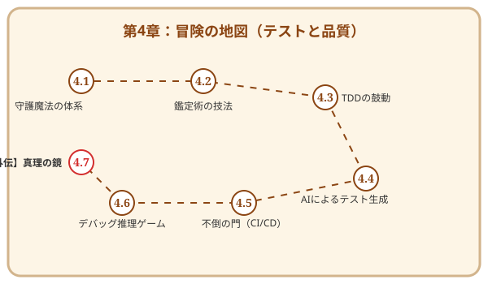

第4章 無敵の軍団を作る——テストと品質保証

この章で手に入れる力
第3章でコードを実装する技を学びました。しかし、書いたコードも、無防備に野ざらしにしておけば風雨に侵食されてしまいます。
ソフトウェアの世界における「風雨」とは、仕様変更、機能追加、そしてチームメンバーによる予期しない修正です。これらの変化からコードの品質を守り抜くには、自動化された守護魔法——テストが不可欠です。
この章では、テストを「面倒な検査作業」ではなく、コードを安心して進化させ続けるための最強の味方として捉え直します。伝統的なテスト設計の知恵から、テスト駆動開発のリズム、AIによるテスト生成、そして自動化の基盤まで——あなたのソフトウェアを鉄壁に守る「無敵の軍団」を編成しましょう。
冒険の地図

読了後のあなた
この章を読み終えると、あなたは以下のことができるようになります。
- 見渡す: テストレベルとテストピラミッドで、何をどの粒度でテストするか判断できる
- 設計する: カバレッジ分析や同値分割で、効率的なテストケースを設計できる
- 駆動する: TDDのリズムで、テストが導く安全な開発を実践できる
- 活用する: AIにテストケースを生成させ、人間が見落とすエッジケースを発見できる
- 自動化する: CIパイプラインでテストを常時実行し、品質を継続的に守れる
- 診断する: テストが検出した不具合の原因を、体系的なデバッグ手法で突き止められる
彫刻を守る鉄壁の軍団を、今から編成していきましょう。
さらに学ぶためのリソース（章全体）
- 📚 書籍: Kent Beck『テスト駆動開発』（TDDの原典）
- 📚 書籍: Gerard Meszaros『xUnit Test Patterns』（テストの設計パターン集）
- 📚 書籍: Lisa Crispin, Janet Gregory『Agile Testing』（アジャイルにおけるテスト戦略）
- 📚 書籍: Cem Kaner, Jack Falk, Hung Q. Nguyen『Testing Computer Software』（テスト技法の古典）
- 📚 書籍: 秋山浩一『ソフトウェアテスト技法ドリル』（テスト設計の実践演習）
- 📚 書籍: 小川秀人、佐藤陽春、森拓郎、加賀洋渡『土台からしっかり学ぶ ソフトウェアテストのセオリー』（テスト全般の体系的な理解）